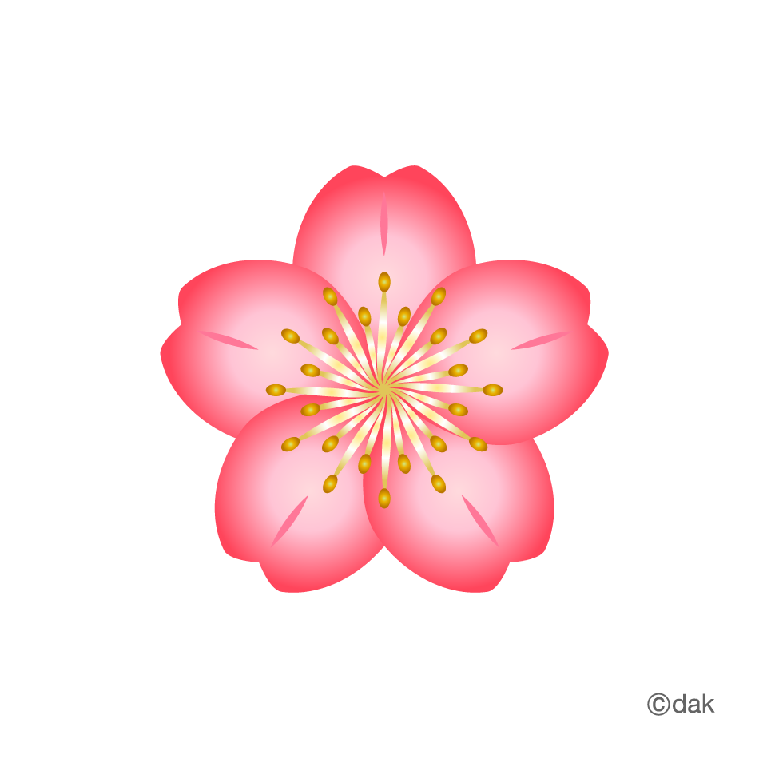

مدیر سایت
سلام، به پنل مدیریت گلینو خوش آمدید
امروز یک روز عالی برای رشد کسبوکار شماست

آخرین فعالیتها
کاربر جدید ثبت نام کرد
۶ دقیقه پیشمحصول جدید اضافه شد
۱۵ دقیقه پیشبلاگ جدید منتشر شد
۳۳ دقیقه پیشکاربر جدید ثبت نام کرد
۱ ساعت پیش